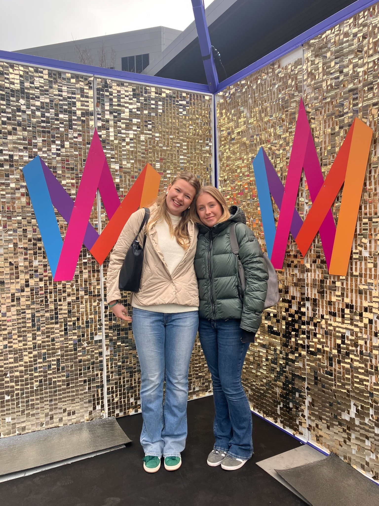

Projekt
Hemsidan
Under praktiken har vi båda blivit intresserade av programmering och vi ville gärna ha ett programmeringsprojekt att jobba på när det fanns tid över. Där föddes idén om att ha vår slutpresentation i form av en hemsida som vi själva skulle koda. Vi byggde sidan med HTML, CSS och JavaScript (och mycket Chat GPT😅). Vi lärde oss längs vägen genom att testa oss fram och hjälpa varandra. Allt skedde i hemlighet för vi ville att hemsidan skulle bli en rolig överraskning för våra handledare när det var dags för slutpresentationen.🤩
Studiebesök
För att både lära känna andra tekniksprångare och ge dem en inblick i hur det är att jobba på SVT, bjöd vi in till ett studiebesök här på plats.🙌 Vi berättade om våra egna erfarenheter som praktikanter, och sedan tog Jenny Wester vid och förklarade hur arbetet fungerar här på SVTi. Därefter höll Christian Lizell en riktigt intressant presentation om sitt arbete och varför han trivs så bra med att jobba i en mobb. Självklart avslutade vi besöket med en rundvandring i huset!😍
